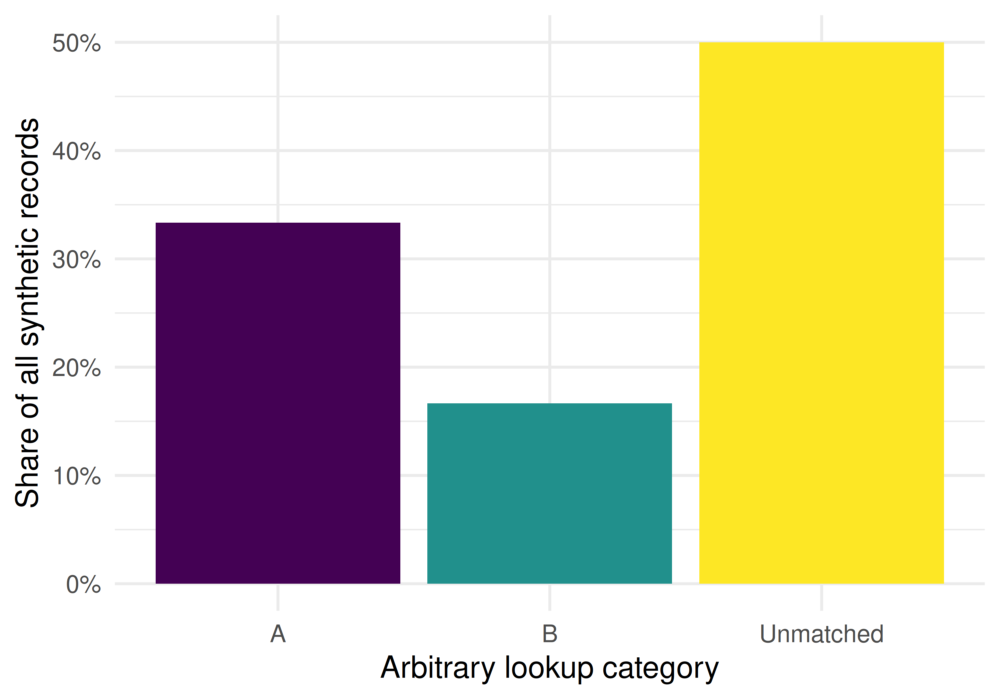

28 Gender and Equity Analysis
28.1 Learning objectives
After completing this chapter, you will be able to:
- Distinguish a name-lookup category from a person’s gender identity
- Measure lookup coverage and explain how excluding unmatched records changes a denominator
- Summarise explicitly synthetic authorship records by recorded position
- Identify the data, validation and consent questions required for an actual equity study
28.3 Conceptual background
Research such as Larivière et al. (2013) examines gender disparities in scientific authorship. Its findings concern particular data, operational definitions and study periods; they are not measurements supplied by this chapter.
Names are not observations of gender identity. A name-classification service produces a model or lookup output, and its coverage and errors depend on its reference data and target population. Santamaría and Mihaljević (2018) compare such services and examine their differing performance. A small hand-written dictionary has no demonstrated accuracy for a scholarly population. Increasing its coverage would not establish validity.
Authorship order is also context-dependent. A recorded first or last position does not establish contribution or seniority, and alphabetical conventions differ from contribution-based conventions. Gender-equity analysis therefore requires an explicit population, defensible demographic measurement, appropriate handling of unavailable information, and interpretation of the authorship conventions actually used. Responsible research assessment should not reduce individuals to such categories (Hicks et al. 2015; American Society for Cell Biology 2012).
28.4 Worked example
28.4.1 Explicitly synthetic records
The following records are invented for a data-handling exercise. They do not describe real authors, papers, journals or gender identities. The lookup categories A and B are arbitrary labels with no demographic meaning. No OpenAlex records or external classification service are used in this example.
synthetic_authors <- tibble(
work_id = c(rep("example-1", 3), rep("example-2", 2), "example-3",
rep("example-4", 4), rep("example-5", 2)),
author_order = c(1:3, 1:2, 1, 1:4, 1:2),
first_name = c("aria", "jordan", "lee", "noor", "ari", "morgan",
"aria", "nuri", "sam", "alex", "ari", "noor")
)
cat(glue("Synthetic author records: {nrow(synthetic_authors)}\n"))#> Synthetic author records: 12#> Distinct example names: 928.4.2 Lookup coverage, not gender classification
example_lookup <- tibble(
first_name = c("aria", "ari", "jordan", "morgan"),
lookup_category = c("A", "A", "B", "B")
)
lookup_records <- synthetic_authors |>
left_join(example_lookup, by = "first_name", relationship = "many-to-one") |>
mutate(lookup_category = replace_na(lookup_category, "Unmatched"))
coverage <- mean(lookup_records$lookup_category != "Unmatched")
cat(glue("Lookup coverage in this invented fixture: {scales::percent(coverage)}\n"))#> Lookup coverage in this invented fixture: 50%28.4.3 Keeping the full denominator
lookup_summary <- lookup_records |>
count(lookup_category) |>
mutate(pct = n / sum(n))
ggplot(lookup_summary, aes(x = lookup_category, y = pct, fill = lookup_category)) +
geom_col(show.legend = FALSE) +
scale_y_continuous(labels = scales::percent) +
scale_fill_manual(values = palette_sci(3)) +
labs(x = "Arbitrary lookup category", y = "Share of all synthetic records") +
theme_sci()
Figure 28.1: Arbitrary lookup categories in invented records, retaining unmatched names in the denominator. These are not gender proportions.
28.5 Diagnostics and interpretation
- Coverage and validity are different. Coverage is the proportion assigned a dictionary label. This exercise has no observed gender variable against which accuracy could be estimated.
- Denominators matter. Report unmatched records rather than silently excluding them. In this fixture, half the records are unmatched; the plotted A/B proportions would change if they were discarded.
- Units matter. These are authorship records, not distinct people. Repeated invented names do not establish repeated identity.
- Position is descriptive. Check ordering, single-author records and local authorship conventions before interpreting positions.
28.7 Limitations and responsible use
This synthetic example establishes no gender distribution, citation gap or equity finding. A real study needs a defensible demographic variable, clearly stated categories and missingness, appropriate consent and data governance, and validation for the population under study. Self-described gender data and the research question may require categories beyond a binary model; a name dictionary cannot supply those observations. Avoid publishing individual demographic assignments inferred from names, and distinguish observed disparity from an explanation of its causes.
28.9 Common pitfalls
- Treating lookup output as measured gender identity or biological sex.
- Calling high classification coverage evidence of accuracy.
- Removing unmatched names and presenting the remainder as representative.
- Counting authorship records as unique researchers without identity linkage.
- Inferring contribution or seniority from author order without supporting information.
28.10 Exercises
Denominator comparison. Recompute the A/B proportions after excluding unmatched records. Explain why those proportions differ from the chart without establishing demographic representation.
Position audit. Check that the fixture has four first, four last, three middle and one single-author record. Verify that each position’s proportions sum to one and still include unmatched records.
Study design. Specify the population, demographic measurement, consent/missingness plan and authorship conventions needed for a real equity study. Explain which required variables are absent from this fixture.
28.11 Solutions
Solutions are provided in E.
28.12 Further reading
- Larivière et al. (2013) — An empirical study of gender disparities in scientific authorship, with its own population and operational definitions.
- Santamaría and Mihaljević (2018) — Comparison and benchmark of name-to-gender inference services.
- Hicks et al. (2015) and American Society for Cell Biology (2012) — Responsible interpretation of research metrics.
28.13 Session info
#> R version 4.6.1 (2026-06-24)
#> Platform: x86_64-pc-linux-gnu
#> Running under: Ubuntu 24.04.5 LTS
#>
#> Matrix products: default
#> BLAS: /usr/lib/x86_64-linux-gnu/openblas-pthread/libblas.so.3
#> LAPACK: /usr/lib/x86_64-linux-gnu/openblas-pthread/libopenblasp-r0.3.26.so; LAPACK version 3.12.0
#>
#> locale:
#> [1] LC_CTYPE=C.UTF-8 LC_NUMERIC=C LC_TIME=C.UTF-8
#> [4] LC_COLLATE=C.UTF-8 LC_MONETARY=C.UTF-8 LC_MESSAGES=C.UTF-8
#> [7] LC_PAPER=C.UTF-8 LC_NAME=C LC_ADDRESS=C
#> [10] LC_TELEPHONE=C LC_MEASUREMENT=C.UTF-8 LC_IDENTIFICATION=C
#>
#> time zone: UTC
#> tzcode source: system (glibc)
#>
#> attached base packages:
#> [1] stats graphics grDevices utils datasets methods base
#>
#> other attached packages:
#> [1] uwot_0.2.5 Matrix_1.7-5
#> [3] word2vec_0.4.1 stm_1.3.8
#> [5] topicmodels_0.2-17 quanteda.textstats_0.97.2
#> [7] visNetwork_2.1.4 ggraph_2.2.2
#> [9] tidygraph_1.3.1 igraph_2.3.4
#> [11] quanteda_4.5.1 pdftools_3.9.1
#> [13] arrow_26.0.0 bibliometrix_5.5.0
#> [15] RefManageR_1.4.0 bib2df_1.1.2.0
#> [17] rcrossref_1.2.1 gt_1.4.0
#> [19] tidytext_0.4.3 glue_1.8.1
#> [21] openalexR_3.1.2 lubridate_1.9.5
#> [23] forcats_1.0.1 stringr_1.6.0
#> [25] dplyr_1.2.1 purrr_1.2.2
#> [27] readr_2.2.0 tidyr_1.3.2
#> [29] tibble_3.3.1 ggplot2_4.0.3
#> [31] tidyverse_2.0.0
#>
#> loaded via a namespace (and not attached):
#> [1] bibtex_0.5.3 RColorBrewer_1.1-3 rstudioapi_0.19.0
#> [4] jsonlite_2.0.0 magrittr_2.0.5 modeltools_0.2-25
#> [7] farver_2.1.2 rmarkdown_2.32 fs_2.1.0
#> [10] vctrs_0.7.3 memoise_2.0.1 askpass_1.2.1
#> [13] base64enc_0.1-6 htmltools_0.5.9 contentanalysis_1.1.1
#> [16] curl_8.1.0 janeaustenr_1.0.0 cellranger_1.1.0
#> [19] sass_0.4.10 bslib_0.12.0 htmlwidgets_1.6.4
#> [22] tokenizers_0.3.0 plyr_1.8.9 httr2_1.3.0
#> [25] plotly_4.12.1 cachem_1.1.0 dimensionsR_0.0.3
#> [28] mime_0.13 lifecycle_1.0.5 pkgconfig_2.0.3
#> [31] R6_2.6.1 fastmap_1.2.0 shiny_1.14.0
#> [34] digest_0.6.39 patchwork_1.3.2 shinycssloaders_1.1.0
#> [37] rprojroot_2.1.1 RSpectra_0.16-2 SnowballC_0.7.1
#> [40] labeling_0.4.3 urltools_1.7.3.1 timechange_0.4.0
#> [43] mgcv_1.9-4 polyclip_1.10-7 httr_1.4.9
#> [46] compiler_4.6.1 here_1.0.2 bit64_4.8.6
#> [49] withr_3.0.3 S7_0.2.2 viridis_0.6.5
#> [52] ggforce_0.5.0 MASS_7.3-65 bibliometrixData_0.3.0
#> [55] tools_4.6.1 otel_0.2.0 stopwords_2.3
#> [58] zip_3.0.2 httpuv_1.6.17 rentrez_1.2.4
#> [61] nlme_3.1-169 promises_1.5.0 grid_4.6.1
#> [64] stringdist_0.9.17 reshape2_1.4.5 generics_0.1.4
#> [67] gtable_0.3.6 tzdb_0.5.0 rscopus_0.9.0
#> [70] ca_0.72 data.table_1.18.6.1 hms_1.1.4
#> [73] xml2_1.6.0 utf8_1.2.6 ggrepel_0.9.8
#> [76] pillar_1.11.1 nsyllable_1.0.1 vroom_1.7.1
#> [79] later_1.4.8 splines_4.6.1 tweenr_2.0.3
#> [82] lattice_0.22-9 FNN_1.1.4.1 bit_4.6.0
#> [85] tidyselect_1.2.1 tm_0.7-20 miniUI_0.1.2
#> [88] downlit_0.4.5 knitr_1.52 gridExtra_2.3.1
#> [91] NLP_0.3-3 bookdown_0.48 stats4_4.6.1
#> [94] crul_1.6.0 xfun_0.62 graphlayouts_1.2.5
#> [97] matrixStats_1.5.0 DT_0.34.0 humaniformat_0.6.0
#> [100] stringi_1.8.9 qpdf_1.4.1 yaml_2.3.12
#> [103] evaluate_1.0.5 httpcode_0.3.0 cli_3.6.6
#> [106] xtable_1.8-8 jquerylib_0.1.4 Rcpp_1.1.2
#> [109] readxl_1.6.0 triebeard_0.4.1 XML_3.99-0.25
#> [112] parallel_4.6.1 assertthat_0.2.1 pubmedR_1.0.2
#> [115] slam_0.1-56 viridisLite_0.4.3 scales_1.4.0
#> [118] crayon_1.5.3 openxlsx_4.2.9 rlang_1.3.0
#> [121] fastmatch_1.1-8